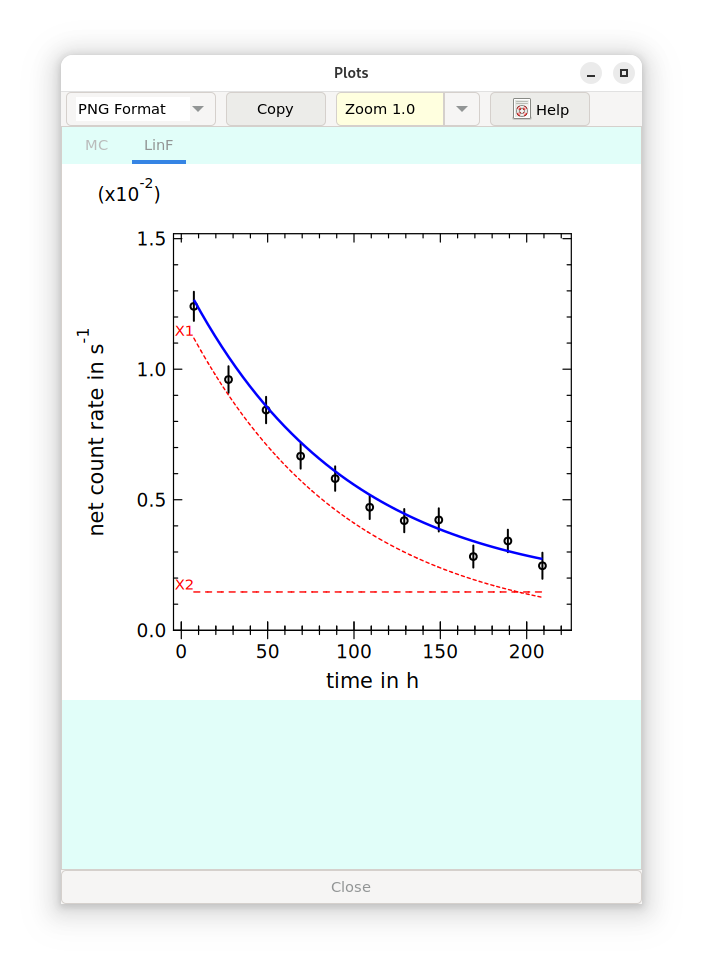

2.9. Graphics window¶
Graphical representations are now displayed in a window containing three Tabs for applications:
Monte Carlo-Simulation (TAB MC),
an application not yet „given free” (TAB MCMC) and
a graphic related to linear unfolding displaying measured values, standard uncertainties and the fitting curve (TAB LFIT).
The associated graphical representations are saved as PNG files:
MCplotfile.png
CurvePlot.png
The button “Copy” allows to save the graphic as a file in a format which has been selected with the combobox, where the user is asked for the filename.
This window can be closed with the button “Close” at the end of the window.
The graphic associated with the TAB LFit can be invoked by the icon in the toolbar.
